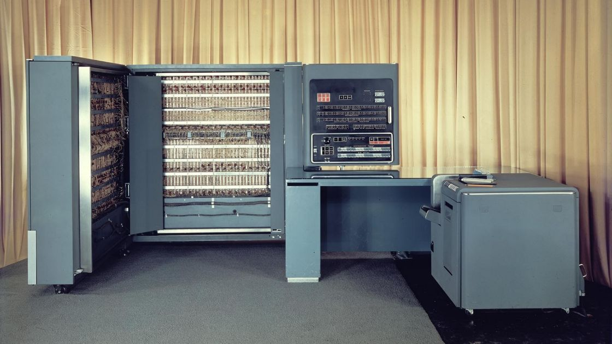

Primera Generación (1940-1956):
La primera generación de computadoras abarca el período aproximado de 1940 a 1956 y está marcada por el uso de tubos de vacío como componente principal para el procesamiento de datos. Estas máquinas fueron el resultado de esfuerzos de investigación y desarrollo durante la Segunda Guerra Mundial y representaron un avance significativo en la capacidad de computación en comparación con los métodos anteriores. La primera generación de computadoras sentó las bases para el desarrollo posterior de la tecnología informática y representó un paso importante en el camino hacia las computadoras modernas que conocemos hoy en día. Aunque limitadas en comparación con las generaciones posteriores, estas máquinas fueron pioneras en el campo de la computación electrónica y sentaron las bases para futuras innovaciones.

foto de ENIAC, una de las primeras computadoras en existir (1946).
Características principales de la primera generación de computadoras:
Tubos de vacío: Los tubos de vacío eran dispositivos electrónicos de válvulas que funcionaban como amplificadores de señal y conmutadores. Se usaban para procesar y almacenar datos en estas computadoras.
-
Tamaño y consumo de energía: Las computadoras de esta generación eran extremadamente grandes y ocupaban salas enteras. Además, consumían grandes cantidades de energía eléctrica y generaban mucho calor.
-
Programación: La programación de estas máquinas era muy diferente a la de las computadoras modernas. Los programas se escribían en lenguajes de bajo nivel y se ingresaban manualmente utilizando tarjetas perforadas o interruptores.
-
Velocidad y capacidad: Aunque estas computadoras eran significativamente más rápidas que los métodos manuales anteriores, su velocidad y capacidad de procesamiento eran extremadamente limitadas en comparación con las generaciones posteriores.
-
Aplicaciones: Las computadoras de esta generación se utilizaron principalmente para cálculos científicos y militares. Ejemplos de aplicaciones incluyen cálculos balísticos, simulaciones de explosiones nucleares y cálculos de trayectorias de proyectiles.
Segunda Generación (1956-1963):
La segunda generación de computadoras abarcó el período aproximado de 1956 a 1963 y representó un avance significativo en comparación con la primera generación en términos de tamaño, velocidad y fiabilidad. Esta generación de computadoras fue marcada por la transición de los tubos de vacío utilizados en la primera generación a los transistores, que eran dispositivos semiconductores más pequeños, más confiables y más eficientes en términos de energía. La segunda generación de computadoras representó un paso significativo en la evolución de la tecnología informática al introducir transistores y mejorar la velocidad, eficiencia y fiabilidad de las máquinas. Estas mejoras allanaron el camino para el desarrollo de computadoras más poderosas y versátiles en las generaciones posteriores.

foto del ibm 700, computadora que utilizaron transistores en lugar de tubos de vacío y fueron ampliamente utilizados para aplicaciones científicas y comerciales. (1950)
Características principales de la segunda generación de computadoras:
-
Transistores: El cambio más importante en esta generación fue la adopción de transistores en lugar de tubos de vacío como el principal componente de procesamiento. Los transistores eran dispositivos electrónicos más pequeños, más duraderos y menos propensos a fallos que los tubos de vacío.
-
Tamaño y eficiencia: Las computadoras de la segunda generación eran mucho más pequeñas y consumían menos energía que sus predecesoras de la primera generación. Esto hizo que fueran más prácticas de usar y permitió su instalación en entornos más diversos.
-
Mayor velocidad y fiabilidad: Gracias a la adopción de transistores, las computadoras de la segunda generación eran más rápidas y confiables en comparación con las de la primera generación. Esto permitió el procesamiento de datos más rápido y la ejecución de programas más complejos.
-
Memoria de núcleo magnético: En esta generación, se introdujo la memoria de núcleo magnético, que utilizaba pequeños anillos de ferrita para almacenar datos de forma temporal. Esta tecnología de memoria era más rápida y confiable que las técnicas de almacenamiento utilizadas en la primera generación.
-
Lenguajes de programación de alto nivel: Se desarrollaron y popularizaron lenguajes de programación de alto nivel como FORTRAN y COBOL, que permitían a los programadores escribir programas en un formato más cercano al lenguaje humano.
Tercera Generación (1964-1971):
La tercera generación de computadoras abarcó el período aproximado de 1964 a 1971 y marcó un hito importante en la historia de la informática con la introducción de los circuitos integrados, también conocidos como chips, en lugar de los transistores individuales utilizados en las generaciones anteriores. Esta generación representó un salto significativo en términos de tamaño, eficiencia y capacidad de procesamiento de las computadoras. La tercera generación de computadoras representó un avance significativo en la tecnología informática al introducir los circuitos integrados y mejorar la velocidad, capacidad y eficiencia de las máquinas. Estas mejoras allanaron el camino para el desarrollo de computadoras aún más poderosas y versátiles en las generaciones posteriores.
.jpg)
foto del ibm 360, la cual fue una serie de computadoras compatibles entre sí que utilizaban circuitos integrados en lugar de transistores individuales. (1964)
Características principales de la tercera generación de computadoras:
-
Circuitos Integrados (Chips): La introducción de los circuitos integrados permitió la integración de múltiples componentes electrónicos en un solo chip de silicio. Estos chips eran más pequeños, más rápidos y más eficientes en términos de energía que los transistores individuales utilizados en las generaciones anteriores.
-
Velocidad y capacidad: Gracias a los circuitos integrados, las computadoras de la tercera generación eran mucho más rápidas y tenían una capacidad de procesamiento significativamente mayor que las generaciones anteriores. Esto permitió el procesamiento más rápido de datos y la ejecución de programas más complejos.
-
Miniaturización: La miniaturización de los componentes electrónicos permitió la reducción del tamaño de las computadoras de la tercera generación en comparación con las generaciones anteriores. Esto las hizo más compactas y más prácticas de usar en una variedad de entornos.
-
Uso de sistemas operativos: Se desarrollaron y popularizaron sistemas operativos más avanzados, como el Sistema Operativo/360 de IBM, que permitían la ejecución de múltiples programas simultáneamente y facilitaban la administración de recursos de la computadora.
-
Lenguajes de programación de alto nivel: Continuó la tendencia de desarrollar y popularizar lenguajes de programación de alto nivel, como COBOL, FORTRAN y ALGOL, que permitían a los programadores escribir programas en un formato más cercano al lenguaje humano.
Cuarta Generación (1971-1980):
La cuarta generación de computadoras abarcó el período aproximado de 1971 a 1980 y estuvo marcada por el desarrollo de los microprocesadores, que integraban múltiples componentes de una computadora en un solo chip. Esta generación representó un avance significativo en términos de tamaño, eficiencia y versatilidad de las computadoras, lo que llevó a una mayor accesibilidad y una amplia gama de aplicaciones tanto en el ámbito comercial como en el doméstico. La cuarta generación de computadoras representó un avance significativo en la tecnología informática al introducir los microprocesadores y mejorar la velocidad, eficiencia y versatilidad de las máquinas. Estos avances allanaron el camino para la adopción generalizada de computadoras personales y la proliferación de aplicaciones informáticas en una variedad de campos.

foto del ibm pc, la cual fue una de las primeras computadoras personales exitosas y estableció el estándar para las computadoras personales que le siguieron.
Características principales de la cuarta generación de computadoras:
-
Microprocesadores: La introducción de los microprocesadores permitió la integración de múltiples componentes de una computadora, incluyendo la unidad central de procesamiento (CPU), la memoria y los dispositivos de entrada/salida, en un solo chip de silicio. Esto redujo significativamente el tamaño y el costo de las computadoras, así como también aumentó su velocidad y eficiencia energética.
-
Computadoras personales (PC): La cuarta generación fue testigo del surgimiento de las primeras computadoras personales (PC), que eran computadoras de escritorio diseñadas para uso personal y empresarial. Esto incluyó el lanzamiento de la primera PC comercialmente exitosa, la IBM Personal Computer (PC), en 1981.
-
Avances en almacenamiento: Se introdujeron unidades de disco flexibles y discos duros, lo que permitió un almacenamiento de datos mucho más grande y rápido en comparación con las generaciones anteriores.
-
Sistemas operativos: Surgieron sistemas operativos más avanzados y amigables para el usuario, como el sistema operativo MS-DOS de Microsoft y el sistema operativo UNIX, que proporcionaban una interfaz gráfica de usuario (GUI) más intuitiva y fácil de usar.
-
Expansión de aplicaciones: La cuarta generación de computadoras vio una expansión significativa en el número y la variedad de aplicaciones informáticas disponibles, que iban desde procesamiento de texto y hojas de cálculo hasta diseño gráfico y juegos.
Quinta Generación (1980-presente):
La quinta generación de computadoras abarca desde la década de 1980 hasta la actualidad y se caracteriza por una serie de avances tecnológicos significativos que han transformado la informática y la sociedad en general. Esta generación está marcada por la miniaturización, la conectividad en red, la proliferación de dispositivos móviles y una mayor capacidad de procesamiento.
Características principales de la quinta generación de computadoras:
-
Microprocesadores avanzados: La quinta generación ha presenciado el desarrollo y la evolución de microprocesadores cada vez más avanzados, que ofrecen mayores velocidades de procesamiento, mayor eficiencia energética y capacidades de multitarea más sólidas.
-
Computación en red: Uno de los desarrollos más importantes de la quinta generación es la proliferación de la computación en red. Internet ha revolucionado la forma en que compartimos información, nos comunicamos y realizamos negocios, creando una infraestructura global de conectividad que ha transformado la sociedad.
-
Dispositivos móviles: La quinta generación ha sido testigo de la explosión de los dispositivos móviles, como teléfonos inteligentes y tabletas, que ofrecen capacidades de procesamiento cada vez mayores y acceso instantáneo a una amplia gama de aplicaciones y servicios en la nube.
-
Inteligencia artificial (IA): La quinta generación ha visto avances significativos en el campo de la inteligencia artificial, con el desarrollo de algoritmos de aprendizaje automático y redes neuronales profundas que han impulsado aplicaciones como el reconocimiento de voz, la visión por computadora y la traducción automática.
-
Realidad virtual y aumentada: Se han desarrollado tecnologías de realidad virtual (VR) y aumentada (AR) que han abierto nuevas posibilidades en áreas como el entretenimiento, la educación, la simulación y la capacitación.
-
Computación en la nube: La quinta generación ha visto la proliferación de servicios de computación en la nube, que ofrecen acceso instantáneo a recursos informáticos escalables y flexibles a través de Internet.
-
Internet de las cosas (IoT): La quinta generación ha sido testigo del surgimiento del Internet de las cosas, que conecta dispositivos cotidianos a Internet y entre sí, permitiendo la automatización y el control remoto de una variedad de dispositivos y sistemas.
la quinta generación de computadoras ha sido testigo de avances significativos en tecnología que han transformado la forma en que vivimos, trabajamos y nos comunicamos, y ha sentado las bases para una sociedad cada vez más conectada e inteligente.